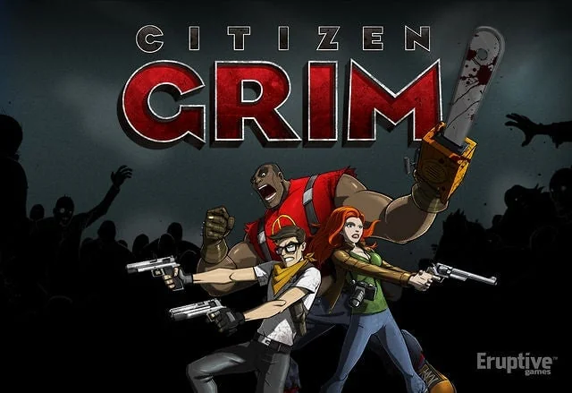

01What I owned
I use a goal-driven process, relying on playtesting and metrics analysis to validate whether a system is actually working for a broad audience or if it needs to be rebuilt.
- Designed and implemented mechanics to increase player retention and store ratings
- Tuned game systems using metrics analysis to improve monetization and engagement
- An improved first-time user experience, with the game's first boss introduced early
- Progression for the waves, with unlocks and named, themed waves
- Hand-authored waves designed around specific weapons and mercenaries
- Multiple regions, giving more places to build and scaling for advanced players
- Wrote narrative copy
02The game
Citizen Grim was a F2P social game that was basically a wave-based shooter. When I came on board, the game was already live and had a core user base.
A few months before I joined, it was running on Facebook and Zynga.com as a mix of common social game conventions and an isometric survival horror shooter.

03First-time experience
My goal was to create an improved first-time user experience to allow players to immerse themselves into the game, and also allow for a small amount of narrative context. Introducing the game's first 'boss' early allowed for some narrative pay-off once the player encountered the enemy later on.

04Wave progression
The next thing was adding many different progression features. The game previously was just a never-ending wave shooter with progressively harder enemies. By adding progression to the waves, we could also have unlocks tied to them, and it gave users something to look forward to.
In addition, we could name certain waves and give them different themes. This added more work on the design side to do a bit more hand-authoring, but it also allowed the ability to create waves that were designed with certain weapons or mercenaries (AI companions) in mind, which were of course featured in the store to purchase.

05Buildings and regions
Another core component of the game was building buildings that produced your core resources. There were only limited places these could be built on the map, so once they were created, that whole section of the game essentially came to a halt (enemies could still attack and destroy buildings, however).

Another thing I introduced for this was multiple regions, which meant more places to build. These areas could also be scaled for more advanced players as they continued to grow in power with XP and resource collection.